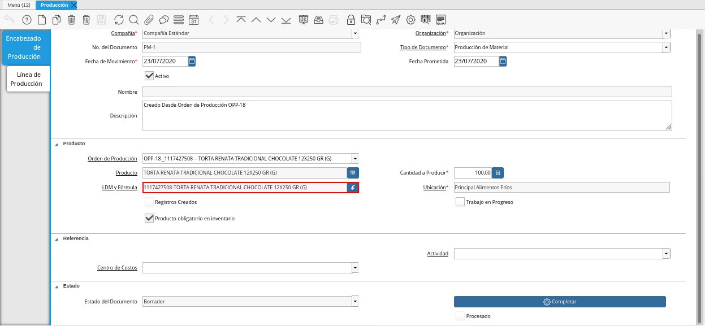

Producción¶
Es el resultado de varias fases de trabajo que se llevan a cabo en una determinada empresa, también es llamado proceso de manufactura, esta es la base o el recurso principal para el ingreso monetario.
Todos los procesos que se llevan a cabo en una empresa estan relacionados directa o indirectamente con el mismo, en tal sentido, la mano de obra puede ser considerada como directa o indirecta dentro del proceso.
La manufactura es originada desde una planificación previa, estimando metas u objetivos de producción que serán producto de control dentro de los turnos que conforman la producción, el resultado de los mismos determinan la estabilidad de una empresa y la disponibilidad de los productos terminados para la venta.
Registro de Producción¶
Ubique y seleccione en el menú de ADempiere, la carpeta “Gestión de Materiales”, luego seleccione la ventana “Producción”.
Imagen 1. Menú de ADempiere

Podrá visualizar la ventana “Producción”, con diferentes registros de producción.
Imagen 2. Ventana Producción

Seleccione el icono “Registro Nuevo”, ubicado en la barra de herramientas de ADempiere, para crear un nuevo registro de producción.
Imagen 3. Icono Registro Nuevo de la Pestaña Encabezado de Producción de la Ventana Producción
Seleccione en el campo “Organización”, la organización para la cual esta realizando la orden de producción.
Imagen 4. Campo Organización de la Pestaña Encabezado de Producción de la Ventana Producción
Introduzca en el campo “No. del Documento”, el número de secuencia correspondiente al documento que esta realizando.
Imagen 5. Campo No del Documento de la Pestaña Encabezado de Producción de la Ventana Producción
Note
Si no es ingresado ningún valor en este campo, ADempiere tomará el número de documento correspondiente a la secuencia que tiene el tipo de documento establecido.
Seleccione el tipo de documento a generar en el campo “Tipo de Documento Destino”, la selección de este define el comportamiento del documento que se esta elaborando, dicho comportamiento se encuentra explicado en el documento Tipo de Documento elaborado por ERPyA.
Imagen 6. Campo Tipo de Documento de la Pestaña Encabezado de Producción de la Ventana Producción
Seleccione en el campo “Fecha de Movimiento”, la fecha en la cual fue realizado el movimiento.
Imagen 7. Campo Fecha de Movimiento de la Pestaña Encabezado de Producción de la Ventana Producción
Seleccione en el campo “Fecha Prometida”, la fecha para la cual fue prometida la producción del producto.
Imagen 8. Campo Fecha Prometida de la Pestaña Encabezado de Producción de la Ventana Producción
Podrá visualizar que el campo “Nombre”, donde se debe ingresar el nombre de identificación correspondiente a la producción que se encuentra realizando, se encuentra sólo lectura.
Imagen 9. Campo Nombre de la Pestaña Encabezado de Producción de la Ventana Producción
Introduzca en el campo “Descripción”, una breve descripción correspondiente a la producción que se encuentra realizando.
Imagen 10. Campo Descripción de la Pestaña Encabezado de Producción de la Ventana Producción
Note
Si no es ingresado ningún valor en este campo al guardar el registro, ADempiere tomará el valor “Creado Desde Orden de Producción”, seguido del número de documento desde el cual es creado, para este caso el campo descripción queda de la siguiente forma: “Creado Desde Orden de Producción OPP-18.
Seleccione en el campo “Orden de Producción”, la orden de producción planeada por la cual se va a realizar la producción del producto.
Imagen 11. Campo Orden de Producción de la Pestaña Encabezado de Producción de la Ventana Producción
Podrá visualizar que el campo “Producto”, donde se debe ingresar el producto correspondiente a la producción que se requiere, se encuentra en sólo lectura ya que su valor será ingresado automáticamente desde la orden de producción seleccionada al guardar el registro de los campos de la pestaña “Encabezado de Producción”.
Imagen 12. Campo Producto de la Pestaña Encabezado de Producción de la Ventana Producción
El checklist “Registros Creados”, indica que fue creado el registro de producción.
Imagen 13. Checklist Registros Creados de la Ventana Producción
Seleccione el checklist “Trabajo en Proceso”, para indicar que la producción se encuentra en proceso.
Imagen 14. Checklist Trabajo en Proceso de la Pestaña Encabezado de Producción de la Ventana Producción
El checklist “Producto Obligatorio en Inventario”, indica que si no hay suficiente cantidad de producto en el inventario; el producto final relacionado a la lista de materiales, no es producido.
Imagen 15. Checklist Producto Obligatorio en Inventario de la Pestaña Encabezado de Producción de la Ventana Producción
Seleccione en el campo “Centro de Costos”, el centro de costos correspondiente al registro que esta realizando.
Imagen 16. Campo Centro de Costos de la Pestaña Encabezado de Producción de la Ventana Producción
Seleccione en el campo “Actividad”, la actividad correspondiente al registro que esta realizando.
Imagen 17. Campo Actividad de la Pestaña Encabezado de Producción de la Ventana Producción
Seleccione el icono “Guardar Cambios”, ubicado en la barra de herramientas de ADempiere, para guardar el registro de los campos de la pestaña Producción”.
Imagen 18. Icono Guardar Cambios de la Pestaña Encabezado de Producción de la Ventana Producción
Al guardar el registro de los campos de la pestaña “Encabezado de Producción”, podrá visualizar que los campos “Descripción” y “Producto”, son cargados automáticamente, con la información de la orden de producción seleccionada en el campo “Orden de Producción”.
Imagen 19. Campos Descripción y Producto Cargados Automáticamente
Adicional a ello, son habilitados los siguientes campos:
El campo “LDM y Fórmula”, contiene la información seleccionada en el campo “LDM y Fórmula” de la orden de producción seleccionada en el campo “Orden de Producción”.

Imagen 20. Campo LDM y Fórmula del Producto de la Pestaña Encabezado de Producción de la Ventana Producción
En campo “Ubicación”, contiene la ubicación para el almacenamiento del producto.
Imagen 21. Campo Ubicación del Producto de la Pestaña Encabezado de Producción de la Ventana Producción


Seleccione la opción preparar para que sea tildada la opción “Registros Creados”, esto como resultado de haber creado las líneas de consumo en la “Pestaña Línea de Producción”.
Seleccione la opción “Completar”, para completar el documento “Producción” realizado.
Imagen 22. Opción Completar de la Pestaña Encabezado de Producción de la Ventana Producción

Seleccione la acción “Completar” y la opción “OK”, para completar el proceso.
Imagen 23. Acción Completar y Opción OK de la Pestaña Producción